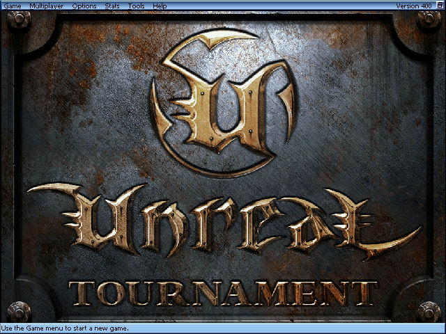
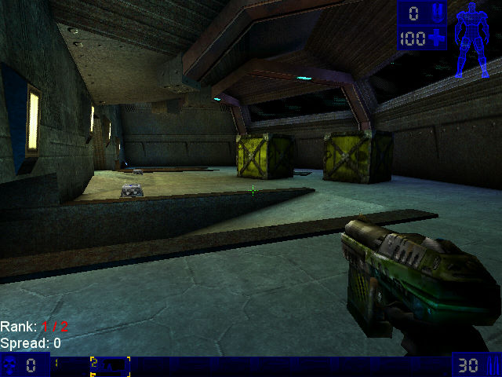

名稱：魔域幻境之浴血戰場／虛幻：武林大會／競技場／錦標賽／冠軍爭奪賽 (Unreal Tournament，英文版)
簡介：EPIC 1999年出品的第一人稱射擊遊戲，由GT代理發行。和原始「魔域幻境」不同的是，
本系列主要著重在多人連線戰鬥，而非劇情任務，離線單機玩時，則由電腦操控對手
[待補]。


保護：光碟SafeDisc 1.35
檔案：UTPatch469d-WindowsXP.rar = 4.69d更新檔（已免光碟）